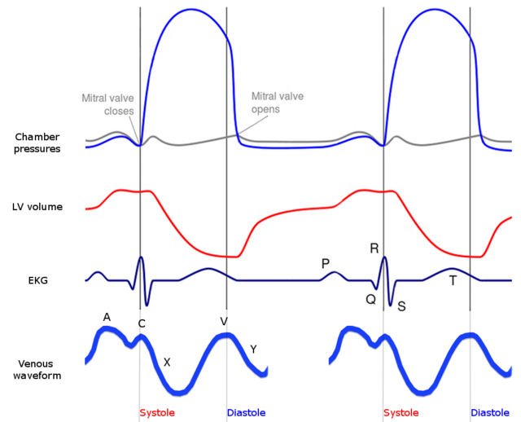
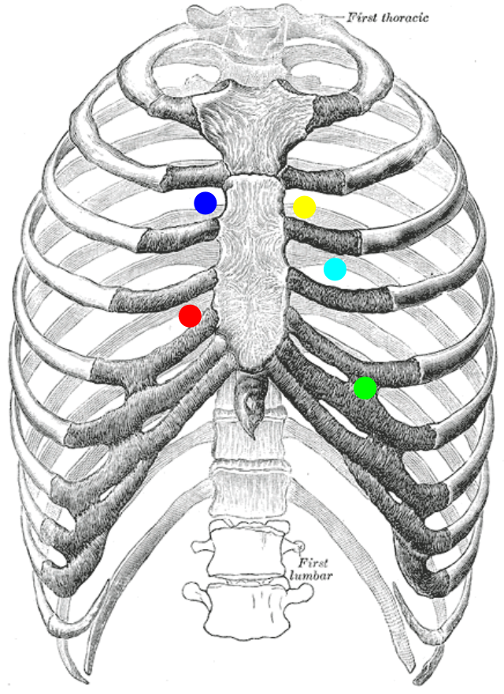

登入
搜尋
題目
主題
分科
彈性空間
瓣膜性心臟病
Saturday February 15 2025
719 PM
心音/雜音
病理意義
聽診區域
Opening Snap
僧帽瓣狹窄Mitral Stenosis
心尖區
Ejection Click
主動脈瓣或肺動脈瓣狹窄、二葉瓣畸形
胸骨上緣
Mid-systolic Click
僧帽瓣脫垂Mitral Valve Prolapse MVP
Pericardial Knock
限制型心包炎Constrictive Pericarditis
胸骨左緣
Friction Rub
心包炎Pericarditis
等級
特徵
Grade I
非常微弱需專心聽診才聽得見
Grade II
較清楚但仍屬輕度容易聽到
Grade III
中等強度無震顫
Grade IV
強烈伴隨可觸摸的震顫Thrill
Grade V
震顫明顯輕放聽診器即可聽見
Grade VI
無需聽診器緊貼皮膚也可聽見
類型
發生時機
可能原因
Systolic Murmur收縮期雜音
S1 S2
瓣膜狹窄、閉鎖不全等
Diastolic Murmur舒張期雜音
S2 S1
瓣膜狹窄或閉鎖不全通常病理性
Continuous Murmur連續性雜音
整個心週期持續出現
PDA 等先天性心臟病
疾病
雜音特徵
聽診位置
輻射方向
Aortic Stenosis AS
粗糙的噴射性雜音Crescendo-Decrescendo
胸骨右緣第 2 肋間
頸部、頸動脈
Pulmonary Stenosis PS
粗糙噴射性雜音
胸骨左緣第 2 肋間
左肩
Mitral Regurgitation MR
持續性吹拂音Holosystolic/Pansystolic
心尖區Apex
左腋下
Tricuspid Regurgitation TR
持續性吹拂音呼吸時變化明顯
胸骨左緣第 4-5 肋間
右胸部或劍突
Mitral Valve Prolapse MVP
中期收縮期點擊音Mid-systolic Click
無特定輻射
Ventricular Septal Defect VSD
強烈粗糙的全收縮期雜音
全胸腔範圍
Aortic Regurgitation AR
高頻遞減性吹拂音Decrescendo Blowing
胸骨左緣第 3 肋間
心尖區Austin Flint murmur
Pulmonary Regurgitation PR
遞減性吹拂音
Mitral Stenosis MS
低頻隆隆音Opening Snap 後的 Mid-Diastolic Rumbling
Tricuspid Stenosis TS
低頻隆隆音
Patent Ductus Arteriosus PDA
機械般的連續性雜音Machinery Murmur
Arteriovenous Fistula
低頻連續性雜音
依位置不同
Coarctation of the Aorta
背部可聽到連續性雜音
肩胛間區
情境
生理變化
影響的雜音
吸氣Inspiration
靜脈回流 右心血流量
右心雜音變大聲如 TR、PS、ASD
吐氣Expiration
左心血流量
左心雜音變大聲如 MR、MS、AS、AR
Valsalva maneuver
靜脈回流 心室充血量
大部分雜音變小聲；但HCM、MVP雜音變大聲
站立Standing
蹲下/抬腳Squatting/Leg raise
大部分雜音變大聲；但HCM、MVP雜音變小聲
握拳運動Handgrip exercise
周邊阻力 Afterload 左心壓力
MR、AR、VSD 雜音變大聲；HCM 雜音變小聲
操作
大部分雜音
HCM 雜音
MVP 雜音
吸氣
右心雜音
-
吐氣
左心雜音
Valsalva
站立
蹲下/抬腳
握拳運動Handgrip
脈搏名稱
可見特徵
生理/病理意義
代表疾病
Normal Pulse
上升快速 最高點 平緩下降
正常血流動力學
Pulsus Tardus
動脈搏動延遲且緩慢上升
收縮期阻力增加 血流受阻
Aortic StenosisAS
Pulsus Parvus
動脈搏動振幅減少amplitude
心輸出量減少
Pulsus Parvus et Tardus
振幅減少+延遲上升
重度 Aortic Stenosis
Severe AS
Pulsus Bisferiens
收縮期出現雙波峰兩個脈衝
快速射血後再次湧現血流
Aortic RegurgitationAR、Hypertrophic CardiomyopathyHCM
Bounding Pulse
動脈搏動快速上升且振幅大跳動感強
Stroke Volume 或周邊血管阻力
Aortic RegurgitationAR、Patent Ductus ArteriosusPDA
Water-Hammer Pulse/
Corrigan's pulse
動脈搏動快速上升後快速下降急速下墜感
大量血液回流 快速壓力釋放
Aortic RegurgitationAR
Pulsus Paradoxus
吸氣時收縮壓下降超過 10 mmHg
心包壓迫或右心負荷增加
Pulsus Alternans
脈搏節律規則但強弱交替變化一強一弱
左心室功能嚴重受損 射出率不穩定
Left Heart Failure心衰竭
Dicrotic Pulse
舒張期出現第二波脈衝低壓時反彈
外周阻力低或心搏出量減少
Sepsis、Severe Heart Failure
Anacrotic Pulse
上升緩慢伴隨收縮期波頂前的小凹陷notch
血流受阻且左心室收縮力降低
Severe Aortic Stenosis
Collapsing Pulse
快速上升且急速下降類似 Water-Hammer
大量回流 壓力迅速釋放

Wave/
Des
cent
成因
心臟週期階段
臨床意義
a wave
右心房收縮 血液推向右心室
心房收縮期 Atrial systole
- 增大肺高壓、三尖瓣狹窄TS、右心室肥厚 - 消失心房顫動Atrial FibrillationAf
c wave
三尖瓣隆起因右心室等容收縮
等容收縮期 Isovolumetric contraction
- 輕微波動部分受頸動脈搏動干擾
x descent
心室收縮期間右心房放鬆與下移
心室收縮期 Ventricular systole
- 加深心包填塞時變淺 - 正常情況下為深谷
v wave
三尖瓣關閉時靜脈血液回流累積於右心房
心室後期收縮期 Late systole
- 增大三尖瓣閉鎖不全TR
y descent
三尖瓣打開 血液流向右心室
心室舒張早期 Early diastole
- 快速下降縮窄性心包炎Constrictive Pericarditis - 緩慢下降心包填塞Cardiac Tamponade
症狀
原因
心絞痛
心肌需氧 但供血受限
昏厥
運動時心輸出量不足 腦灌流
心衰竭
慢性後負荷 LV功能惡化
心雜音類型
病因
治療方式
Aortic Stenosis
收縮期 Crescendo-Decrescendo
鈣化退化、二葉瓣、風濕性
TAVR/SAVR
Aortic Regurgitation
舒張期遞減型雜音
馬凡氏症、內膜炎、升主動脈擴張
血管擴張劑、瓣膜置換
Mitral Stenosis
舒張期隆隆音 + Opening Snap
風濕性心臟病
PBMV/瓣膜置換
Mitral Regurgitation
全收縮期雜音向腋下放射
MVP、乳頭肌功能障礙、內膜炎
瓣膜修補/置換

特性
機械瓣膜
生物瓣膜
耐用性
20–30 年
10–15 年
血栓風險
高需終生抗凝
低大多不需長期抗凝
抗凝治療
終生需使用WarfarinINR 2.0–3.5
3–6 個月 Warfarin之後 Aspirin
適用族群
50 歲需長期抗凝者
65 歲無法長期使用抗凝者
再手術風險
低
高
REFERENCE
使用 OneNote 建立。
{kind=link}